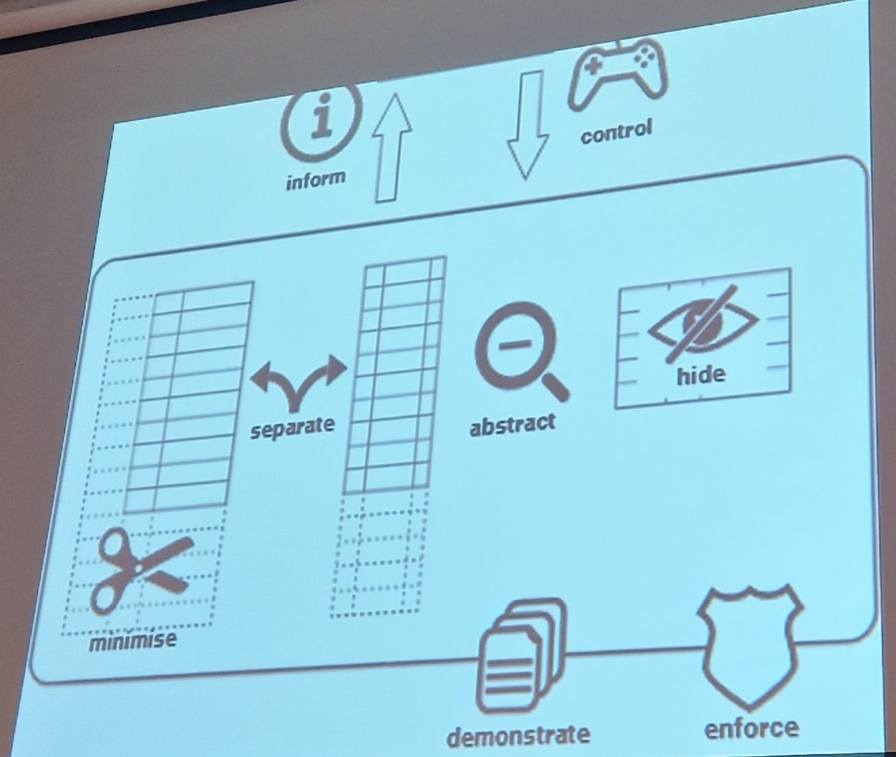

Aantekeningen tijdens de lezing:
We moesten eerst in een rij staan. Bij het podium was ik heb niks te verbergen en aan de andere kant was ik heb veel te verbergen.
Lees meer...
Roel van Programma Fox pop. Een stukje kijken van het 'Ik-heb-niks-te-verbergen-experiment'.
Meestal wordt gedacht ik ben eerlijk, ik heb niks te verbergen. Maar waar iemand precies woont of z'n pincode wordt niet gedeeld.
De 3 kanten van privacy:
- Het is een inidividueel recht (= met rust gelaten worden)
- Een social recht (= in elke context anders kunnen zijn)
- Een democratische noodzaak (= autonoom je mening kunnen vormen)
Wat we wel en niet willen delen verschilt per context (dokter? Familie? Vrienden? Werk?)
Helen Nissenbaum is één van Hans z'n favoriete denker.
Zij zei: "Privacy moet je zien als contextuele integriteit".
Hiermee wordt bedoeld: Er worden geen onverwachte dingen gedeeld met onverwachte partijen.
Privacy is geen heel ding, maar een cultureel ding dat constant veranderd.
Daarnaast gaat het ook over controle. Controle gaat, voor Hans, uiteindelijk over macht.
Privacywetgeving:
AVG (Algemene Verordening Gegevensbescherming)
Eigenlijk gewoon common sense over hoe je met elkaar om zou moeten gaan --> Zo moeten we ook doen over gegevens
IP-adres wordt gezien als persoonsgegevens.
Wanneer je om persoonsgegevens vraagt mag het alleen als:
- Toestemming. Die vrij en geïnformeerd is.
- Noodzakelijk voor het uitvoeren van een overeenkomt (online bestellen, contract)
- Bij een vital belang. (als iemand iets overkomt mag je in zijn/haar telefoon voor hulpdiensten)
- Bij een algemeen belang voor het openbaar gezag (informatie dat je deeld met politie)
- Bij een gerechtvaardigd belang
Daarbij geldt doelbinding
Je mag de data alleen maar gebruiken voor het doel waarvoor je het verzameld hebt.
Je hebt recht op:
- Je mag je gegevens inzien, corrigeren en aanvullen
- Je hebt recht op vergetelheid (je mag gegevens verwijderen)
- Je mag je data meenemen naar een andere partij (dataportabiliteit)
Door de AVG is data over personen niet alleen maar een asset.
Data over personen is ook een liability (kwetsbaar).
Om aan de wet te voldoen moet je een strategie toepassen van dataminimalisatie.
Zo min mogelijk gegevens verwerken.
Jaap-Henk Hoepman heft een boek geschreven "privacy is hard and seven other myths".
In dat boek is hij aan het nadenken hoe kan je de functionaliteit krijgen die je wil, met een garantie van zoveel mogelijk privacy.
Dit kan vaak met cryptografie en slimme algoritmische oplossingen (hashes, blind signatures, statistical disclosure control, differential privacy, revocable privacy, attribute based credentials, etc)
Er zijn achttal strategieën:
